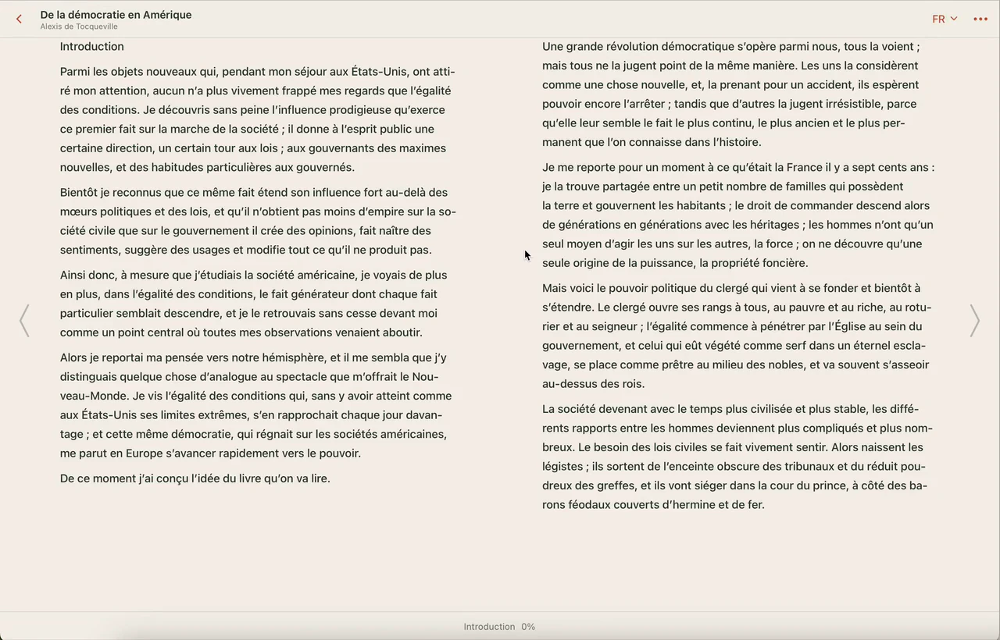

Globoox
Open App ↗A world of books. Open to you.
Globoox — reading app that instantly translates e‑books into your native language.
Upload your first book
DesktopTabletPhone

Same copy · Same media
A world of books. Open to you.
